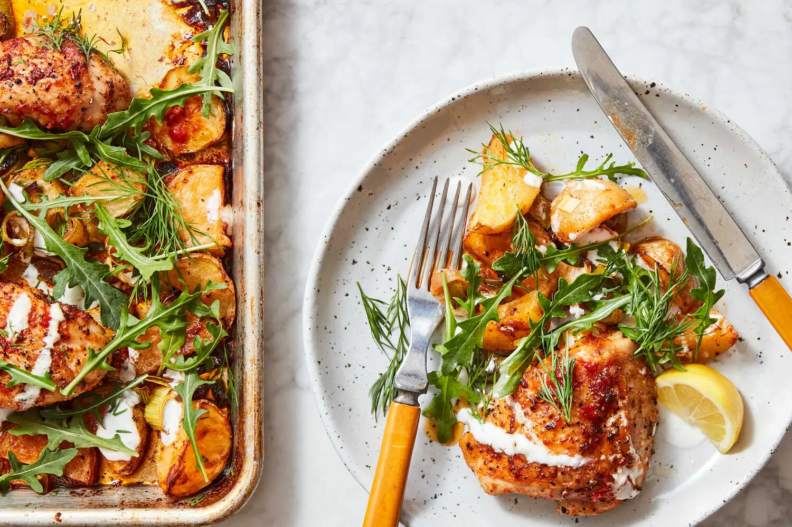

This week's meal plan
Monday
Coconut Miso Salmon Curry
Tuesday
Sheet-Pan Chicken With Potatoes, Arugula and Garlic Yogurt

Wednesday
Dumplings
Thursday
Salad
Friday
TBD
Saturday
TBD
Sunday
TBD
Our Favorite Recipes
Here are some of our favorite recipes that we love to make at home. They are easy to follow and delicious!
Recipes
- Coconut Miso Salmon Curry
- Sheet-Pan Chicken With Potatoes, Arugula and Garlic Yogurt
- Crisp Gnocchi With Brussels Sprouts and Brown Butter
- Lemony Orzo With Asparagus and Garlic Bread Crumbs
- Sticky Miso Salmon Bowl
- Marcella Hazan’s Bolognese Sauce
- Roasted Chicken Thighs With Hot Honey and Lime